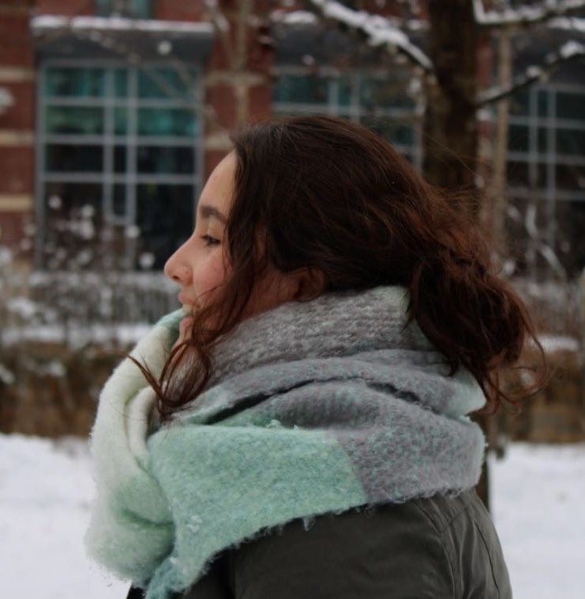

I'm a freelance digital artist/illustrator raised in North Carolina, trying to turn my longtime passsion into a career. I'm also a giant lover of creating intriguing and beautiful visuals that narrate a story.
That's why, other than art, I also have a strong interest in cinema and animation.